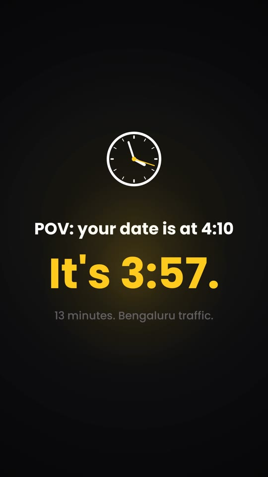
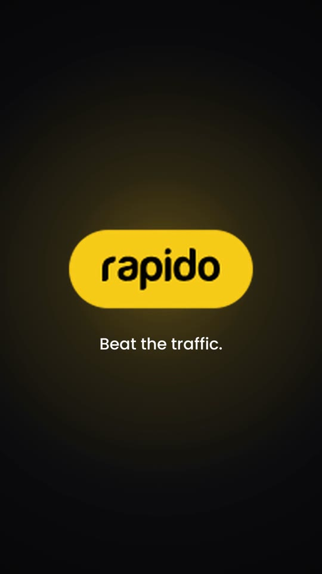
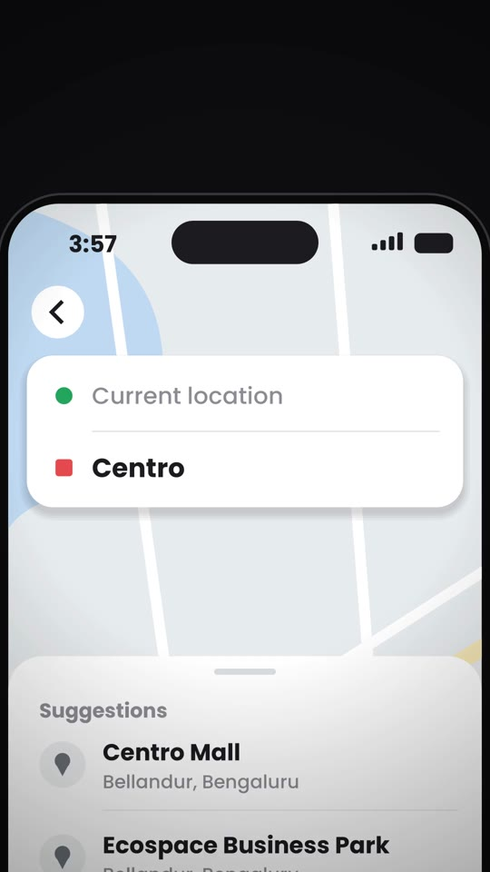
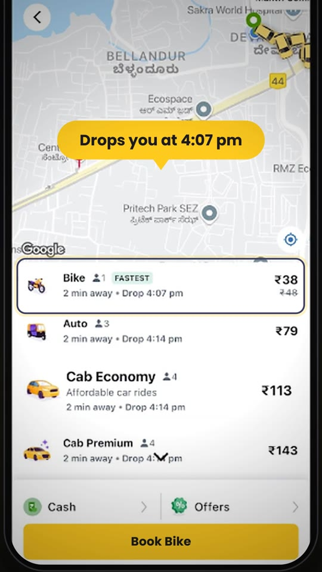
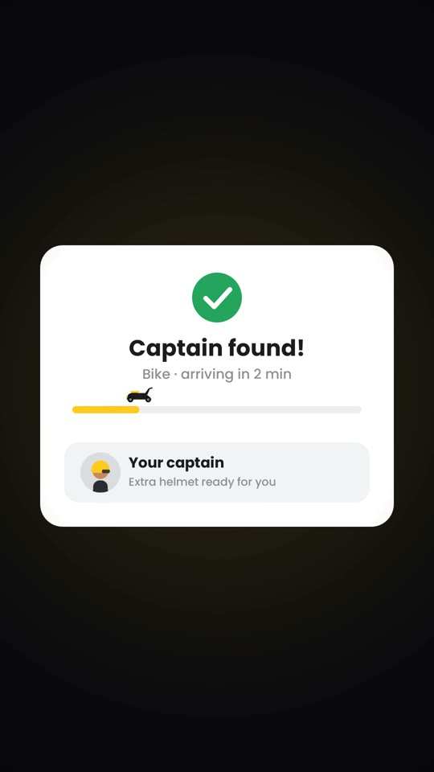
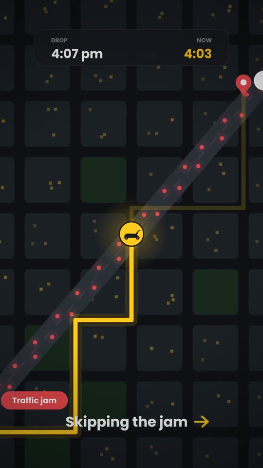
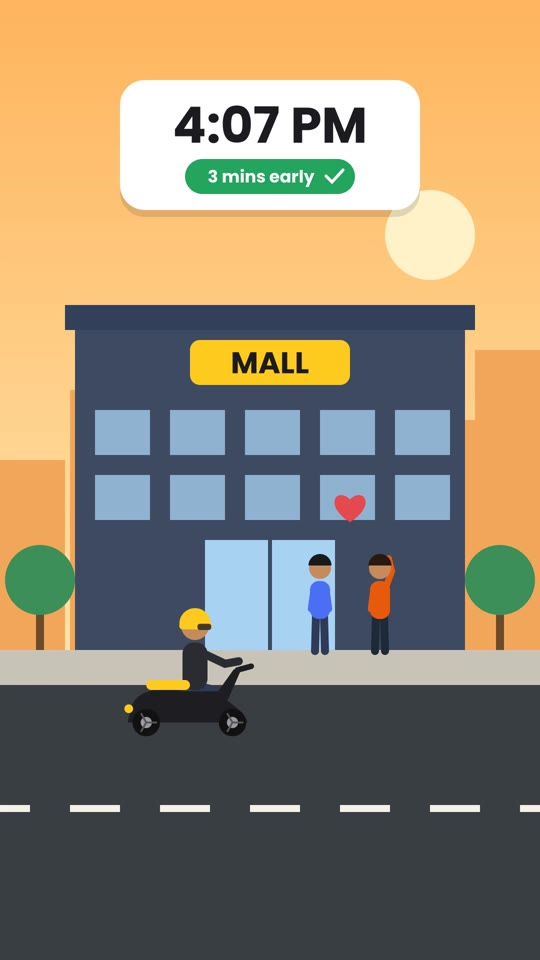
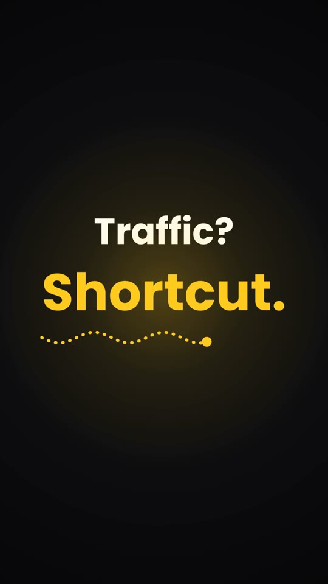

Make a 30-second app ad with one Claude chat
Send Claude a screenshot of an app. Get back a short video ad with moving pictures, music and a voice.
No video app needed. It works for any app.
What's a prompt? It's the message you type to the AI. We give you 6 ready ones to copy.
How it works
- Tell Claude the appit asks you a few questions
- Send a screenshotClaude writes the story from it
- Check the planscene by scene, before the video
- Check a few picturesfix small things early
- Add music and a voiceClaude makes these too
- Done!download the video and post it

Hook 
Logo 
Search 
Real screen 
Captain 
Map ride 
Arrival 
Tagline
The ad we made with this exact workflow · concept ad, not affiliated with Rapido
Works for any appFood, rides, shopping, your own startup…
- Food delivery
- Rides and travel
- Shopping
- Payments and banking
- Fitness and health
- Learning
- Your own startup
We used Rapido as the example. Any app works. Just change [APP] to its name and send its screenshots.
What you need
- 1 to 6 screenshots of the app, straight from your phone
- The app's logo as a picture file (PNG)
- About 30 minutes. Most of it is waiting.
Step by step
Step 1: Let Claude interview you
You don't need to write much. Copy Prompt 1 and change [APP] to the app's name. Claude will ask you questions. Answer each in one line.
Prompt 1 · Brief
I want to make a 30-second motion ad for [APP] in 9:16 for Instagram Reels. Before you build anything, ask me everything you need: assets, story angle, tagline, music mood and language.
Our answers were just: tall phone video (9:16) · 30 seconds · catchy tagline · chill music · English.
Not sure which app? Ask: “Suggest 5 apps that would make a great motion ad, with a story and a word-swap tagline for each.” We started with Spotify and switched to Rapido because the ride flow tells a better story.
Step 2: Let your screenshot write the story
Send your screenshots and logo with Prompt 2. Our screenshot showed 3:57 pm now and arrival at 4:07 pm. Claude made that the opening line: “Your date is at 4:10. It's 3:57.”
Prompt 2 · Assets
[Attach screenshots + logo] Here are my assets. Read the details on the screenshots (times, prices, places, labels) and build the story around them so the real screen proves the point. Hide any personal info: names, phone numbers, faces, number plates.
Only one screenshot? That's all we had. Claude drew simple versions of the other screens. Send more real screens for a more real look.
Step 3: Check the plan first
Storyboard: a scene-by-scene plan of the video, written as a table.
Making the video takes minutes. Fixing the plan takes seconds. So ask for the plan first with Prompt 3.
See our planThe 9 scenes of our ad
| Time | Scene | What happens |
|---|---|---|
| 0–2.6s | Hook | Ticking clock, “POV: your date is at 4:10” → “It's 3:57.” |
| 2.6–5s | Logo | Logo pops in with a yellow glow |
| 5–9s | Search | Phone rises, zoom on search, destination typed live |
| 9–13s | Real screen | Zoom on Bike, tap, “Drops you at 4:07 pm” callout |
| 13–16s | Captain | Check mark draws, progress bar fills |
| 16–21s | Map ride | Route weaves past a red traffic jam, clock runs |
| 21–24s | Arrival | 2D cartoon at the mall, “4:07 PM · 3 mins early” |
| 24–28s | Tagline | “Traffic? |
| 28–30s | End card | Logo + “Concept ad, not affiliated” |
Prompt 3 · Storyboard
Give me a scene-by-scene storyboard as a table with timestamps, plus 3 viral tagline options that use a word-swap twist (old word struck out, new word revealed). Don't render anything yet.
Step 4: Check a few pictures, then fix
Before the full video, ask for one still picture from each scene. It's quick to spot problems this way.
Frame grid: still pictures from the video, shown side by side. Render: when Claude makes the full video.
Prompt 4 · Preview
Build it, but first show me a frame grid with one frame from each scene. I'll approve before you render the full video.
What we fixed in ours3 small problems we caught
- Two symbols (→ and ✓) didn't exist in the font and showed as boxes
- The captain's avatar spilled outside its card
- A leftover outline from editing the screenshot (Cab → Bike)
Say the time when you ask for a fix. “At 0:17, slow down the map” works better than “make the map better”. Ask for 2 or 3 fixes at a time.
Step 5: Music, sound effects and voiceover
Claude makes the music and sound effects itself. It can also write the words and make the voice.
SFX: sound effects, like taps and whooshes. Voiceover: a voice that talks over the video.
Prompt 5 · Sound
Add music and sound effects. - One continuous track, beat changes on the scene cuts - Realistic SFX only: typing, taps, a chime, whooshes on 2–3 big transitions - Piano on the opening and closing logo - Also give me music-only and SFX-only files
Prompt 6 · Voiceover
Add a voiceover. Write short English lines timed to each scene, generate the voice, and lower the music to about 40% while the voice plays. Show me the script with timestamps.
Our voiceover scriptWhat the voice says, and when
| Time | Line |
|---|---|
| 0:00 | “Date at four ten. It's three fifty-seven.” |
| 0:03 | “Relax. Open Rapido.” |
| 0:06 | “Type where you're headed, pick a bike, and you're there by four-oh-seven.” |
| 0:14 | “Your captain's two minutes away.” |
| 0:17 | “While cars sit in traffic, you zip right past it.” |
| 0:22 | “Four-oh-seven. Three minutes early.” |
| 0:24 | “Traffic? Not a problem. A shortcut.” |
| 0:28 | “Rapido. Beat the traffic.” |
Listen to how it says the app's name. AI voices can get it wrong. Ask Claude to spell it the way it sounds, or try another voice. You can also send your own recording.
Step 6: Download and post
Download the video from Claude. Watch it once on your phone, then post it.
Video settings (for experts)Only if you want to check them
- 1080×1920, H.264, 30 or 60 fps
- AAC 320 kbps stereo
- About −14 LUFS loudness
Before you post
- The voice matches each scene
- No names, phone numbers or faces showing
- Sounds good on the phone speaker and earphones
- Labelled “Concept ad, not affiliated with [BRAND]”
Next time: one prompt for everythingAfter your first ad. Fill in the [brackets].
Master prompt
[Attach app screenshots + logo] Make a [30]-second motion ad for [APP] in [9:16]. Story: build it around the real details in my screenshots. Hide any personal info. Hook: a POV line in the first 2 seconds. Tagline: word-swap twist, e.g. "[OLD WORD] → [NEW WORD]". Give me 3 options first. Sound: [chill / upbeat] music, minimal realistic SFX, English voiceover with music ducked under it. End card: logo + "Concept ad, not affiliated with [APP]". Process: storyboard table first → frame grid preview → full render. Deliver: final MP4 (1080×1920) + music-only, SFX-only and voice-only files.
Good to know
- Use the original screenshots. Small or cropped ones look blurry.
- Claude can't watch YouTube links. To copy a style, send a screen recording instead.
- Making the video takes a few minutes. That's why you check the plan and pictures first.
- Your files stay safe. Claude works on copies.